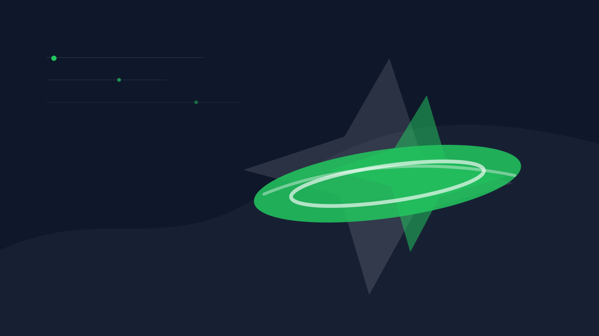

Ny i discgolf
Start med hva sporten er, første runde, grunnregler og et enkelt diskoppsett.

Uavhengig norsk discgolfportal
Diskgolfutstyr hjelper deg å forstå sporten, velge riktige disker, finne baner og lære reglene uten falske tester eller tynn affiliate-støy.
På banen nå?
Snarveier for mobil når du trenger hjelp med regler, diskvalg, bane eller første runde.
Start riktig sted
Diskgolfutstyr er laget for deg som vil lære sporten, velge tryggere utstyr, finne baner og forstå regler uten kjøpepress eller falske tester.
Start med hva sporten er, første runde, grunnregler og et enkelt diskoppsett.
Forstå putter, midrange, fairway-driver, flight numbers og hva som er smart å kjøpe først.
Bruk norske bane- og bysider for å finne aktuelle baner og nybegynnervennlige alternativer.
Bygg kontroll med backhand, forehand, putting, hyzer/anhyzer og kast i vind.
Få enkle øvelser og treningsrutiner som kan brukes hjemme, på felt og før runden.
Lær hvordan turneringer fungerer, hva PDGA-rating betyr og hva du bør ha med.
Redaksjonell linje
Målet er at siden skal være nyttig først. Affiliate kan komme senere, men anbefalinger skal merkes tydelig og bygge på kilder, offentlig produktdata, spillererfaringer eller fysisk test når det faktisk finnes.
Skal bare brukes når produkt eller metode faktisk er testet av Diskgolfutstyr.
Skal merkes når vurderingen bygger på produsentdata, offentlig info og spillererfaringer.
Brukes for testoppsett og backlog, uten å late som testen allerede er gjennomført.
Banedata kan endre seg. Sjekk alltid klubb, arrangør eller banetjeneste før du drar.
Velg retning
Forsiden er bygget for raske valg. Nye spillere får en trygg start, mens erfarne spillere kan gå rett til utstyr, teknikk, regler eller baner.
Helt ny
Få oversikt over sporten, første runde, grunnregler og hvilke disker du faktisk trenger.
Teknikk
Start med backhand, forehand og putting, med fokus på kontroll før kraft.
Diskvalg
Forstå putter, midrange, fairway-driver og flight numbers før du handler.
Regler
Praktiske norske forklaringer med lenke videre til offisielle PDGA-regler.
Baner
Finn norske baner, byguider, nybegynnervennlige alternativer og 18-hullsbaner med tydelige kilder.
Tester
Se research-baserte sammenligninger og testplaner tydelig merket med evidensstatus.
Klubber
Finn norske discgolfklubber, lokale miljøer og hvor du kan sende inn rettelser.
Turnering
Lær påmelding, klasser, PDGA-rating og hvor du finner oppdatert terminliste.
Trening
Bruk enkle øvelser for putting, backhand, forehand, vind og viderekommen teknikk.
Nybegynner
Start
En enkel forklaring av sporten, første runde og hva du trenger for å komme i gang.
Les guidenUtstyr
Hvorfor putter og midrange ofte er bedre enn en rask distance-driver.
Se diskoppsettFeil
Unngå de klassiske feilene: for rask driver, for mye kraft og for mange disker.
Unngå feileneUtstyr, tester og sammenligninger
Produktinnhold er bygget for affiliate senere, men merkes tydelig som fysisk test, research-basert eller idé til fremtidig test.
Hva et godt startsett bør inneholde, og hva nye spillere bør unngå.
Se startsett-guideHvorfor fairway-driver ofte gir bedre praktisk resultat for nye spillere.
Les sammenligningenFordeler, ulemper og passer-for-felt er viktigere enn salgstekst.
Se utstyrshubProduktguider for nybegynnere med fordeler, ulemper, flight numbers og tydelig disclosure.
Se putterguideBaner og regler
Ny statisk baneseksjon med byguider, baneprofiler, nybegynnervennlige valg og enkle filtre.
Se discgolfbaner i NorgeKorte og mer oversiktlige alternativer for deg som skal spille første runde eller ta med familien.
Se nybegynnervennlige banerOslo-side med aktuelle baner, enklere alternativer, 18-hullsbaner og praktiske tips.
Se Oslo-guidenBergen-side med baner å vurdere, kildepeker og tips for nye spillere.
Se Bergen-guidenTrondheim-side med korte lavterskelbaner og mer krevende alternativer.
Se Trondheim-guidenPraktiske forklaringer for nye spillere, med tydelig lenke til offisielle PDGA-regler når detaljer er viktige.
Se reglerNye guider
Nye praktiske guider fra Fase 13, valgt for å styrke nybegynner-, utstyr-, bane-, teknikk- og turneringsklyngene.
Nybegynner
Kontroll, forventninger og trygg progresjon for nye spillere.
Les guidenUtstyr
Hva plastvalg betyr for grep, slitestyrke og økonomi.
Les guidenBaner
Forsiktig lokal guide med baner å vurdere og kilder.
Se Oslo-nær guideTeknikk
Kontrollerte innspill og enkle øvelser.
Les teknikkguidenTurnering
Praktisk pakkeliste for første konkurranse.
Les turneringsguidenSesong
Tryggere kastvalg og smartere leterutine.
Les guiden